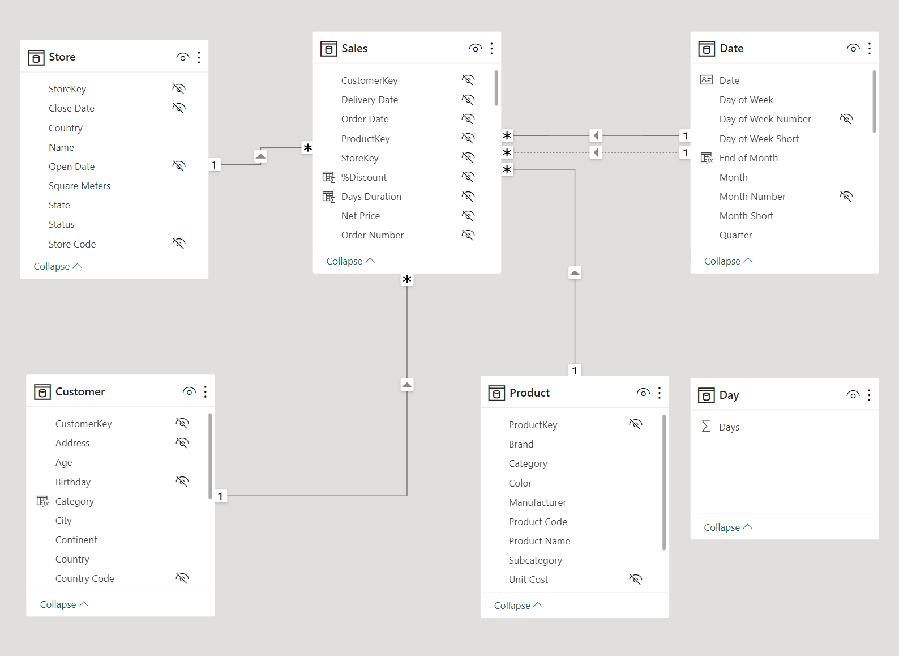

Live Dashboard
This is my Power BI dashboard about sales analysis on a company called Contoso. Power BI is very interactive dashboard, you can click anything on the dashboard to filter (bar, table, etc). Remember to view the dashboard in full screen by clicking the icon in the bottom right corner.
Explanation
I will explain every graphs that at the dashboard. But first, let’s take a look at the table being used and its relationships.

The Store, Customer, Product, and Date tables have a ‘1 to many’ relationship with the Sales table. A quick reminder that in Power BI, relationships also serve as filters (for example, in this case, filtering the Customer table will also filter the Sales table). The Day table is a custom-made table that will be used as a filter in the ‘Delivery Days by Online Store’ graph. Below is the plots explanation:
1. LastYear Sales, Sales and Profit by Month
This plot is useful for comparing sales in the filtered year with sales in the same month of the previous year. There is also a profit line to display the profit in the filtered year.
2. Sales by Store Country
This plot displays the total sales by store country.
3. Online store customer order count by Country
This plot shows the number of customers based on the country who have purchased the product online.
4. Customer buy more than once by Country
This plot displays how many customers have purchased the product more than once, or we can consider them as returning customers.
5. Total stores
This plot shows the number of stores in each country.
6. Delivery days by online store
This plot displays the performance of online store deliveries in each customer country. For example, a value of 67% for the country ‘Australia’ and on day ‘3’ means that 67% of all product deliveries to Australia were completed within a maximum of 3 days.
7. Most sold product
This plot displays product sales and the corresponding profit, sorted in order of the most popular or highest-selling products.
8. Most sold product by age category
This plot shows the sales of the top-selling products based on age categories.
Insights
Note: the data obtained for the months of 2017 and 2020 is not complete. In 2017, data for months 1-4 is missing, and in 2020, data for months 4-12 is also missing. Reliable analysis can only be based on the years 2018 and 2019.
- The highest sales were recorded in 2018. The sales trend increased from 2017 to 2018, then decreased until 2020.
- The highest sales were in the online store, and its sales contribution was 47.69% in 2017, 58.17% in 2018, 64.02% in 2019, and 61.9% in 2020.
- The highest sales for offline stores are in the United States, and there is a significant sales gap between the United States and other offline stores.
- The months with the highest sales are January, February, and December, while the lowest sales are in April.
- In the online store, the highest number of customers with the highest purchases are in the United States, while the lowest number of customers is in Italy.
- The best-selling product category is computers, with the top-performing subcategories being desktops, laptops, and projectors & screens.
- The profit distribution across all product categories is fairly balanced, with an approximate range of around 50%.
- The largest increase in sales from year to year occurred from 2017 to 2018. This is primarily due to the incomplete sales data in 2017, which makes the increase appear more significant in 2018.
- In the year 2018-2019, all products experienced a decrease in sales except for the “Games and Toys” category.
- Return customers (those who shop more than once a year) in all stores are very few, accounting for less than 2%.
- For the online store, the delivery performance in each year is, on average, above 90%, with the products reaching customers in less than 5 days.
- Purchases from the online store have been increasing from year to year, except for 2020 (due to incomplete data). As online store sales continue to rise, reducing offline stores should be done gradually. However, for stores in the United States, considering the largest customer base from the company originates there, adding more stores might be a viable strategy.
- To increase return customers, sales of short-term consumable products should be increased by lowering prices or offering discounts on those products. It can be observed that the profit margin for these products is around +-50%, and this profit can be reduced to lower the product prices.
- The performance of the Online Store’s product delivery from year to year is quite stagnant, with 0-20% of items reaching customers on the first day, 60-80% on the third day, and >90% on the fifth day. To improve this, enhancing courier services to ensure that over 90% of deliveries reach customers by the third day is crucial. Faster delivery to consumers can indeed lead to better sales by encouraging repeat/return customers.
- In January, February, and December, sales are quite high. Create bundling purchase promotions to encourage customers to buy more items.
- In March and April, sales are at their lowest point. Create discount promotions to attract customers.
In the future, I will try to explained in detail how I build this dashboard (including the DAX codes) and how to publish it live on website.